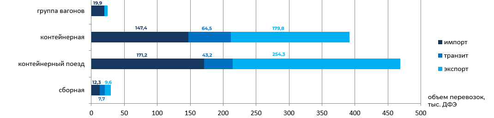

Анализ транспортных продуктов контейнерных перевозок холдинга ОАО "РЖД" (2010 год)
Транспортные продукты на рынке железнодорожных контейнерных перевозок (2010 г.)
- Одиночные и групповые перевозки контейнеров: осуществляются на все станции, открытые для работы с контейнерами, маршрутная скорость от 75 до 450 км в сутки;
- Перевозки в контейнерных поездах между станциями, на которых расположены крупнейшие контейнерные терминалы (в основном экспортно-импортные или транзитные, реже внутренние перевозки) с маршрутной скоростью 800-900 км в сутки;
- "Транссиб за 7 суток" (перспективный транспортный продукт): ускоренный контейнерный поезд в сообщении Находка-Красное (в планах Марцево-Находка), маршрутная скорость до 1362 км в сутки;
- Сопутствующие услуги: терминальная обработка контейнеров и грузов, доставка "до двери" заказчика контейнеров автотранспортом, таможенное оформление, услуги таможенных складов временного хранения, экспедиторские услуги.
Распределение объемов перевозок по типам транспортных продуктов, 2010 г.
